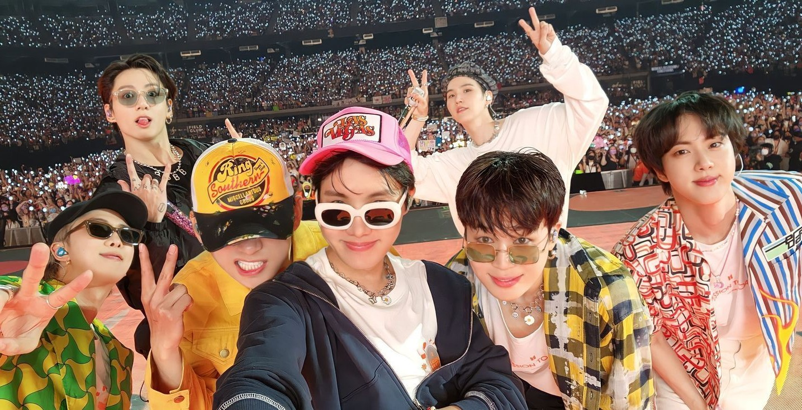

BTS (Bangtan Boys): The Global Sensation Redefining Music and Culture
BTS, also known as Bangtan Boys, is a South Korean boy band formed in 2013, under Big Hit Entertainment (now HYBE Corporation). Originally formed as a hip-hop group, BTS has evolved into a versatile musical act with a massive international following, transcending languages, cultures, and genres.
Who Are BTS?
The group consists of seven members:
1. RM (Kim Namjoon) – Leader, rapper, lyricist
2. Jin (Kim Seokjin) – Vocalist, oldest member
3. Suga (Min Yoongi) – Rapper, producer
4. J-Hope (Jung Hoseok) – Rapper, dancer, performer
5. Jimin (Park Jimin) – Vocalist, dancer
6. V (Kim Taehyung) – Vocalist, visual
7. Jungkook (Jeon Jungkook) – Main vocalist, maknae (youngest)
Each member brings a unique personality and set of talents, which contributes to BTS’s cohesive yet diverse appeal.
The Meaning Behind the Name:
Bangtan Sonyeondan (방탄소년단) literally means “Bulletproof Boy Scouts” in Korean.
It signifies the group’s desire to "block out stereotypes, criticisms, and expectations" like bulletproof armor.
In 2017, BTS also announced a second meaning: "Beyond The Scene", reflecting their growth and forward-thinking identity.
Debut and Early Struggles:
BTS officially debuted on June 13, 2013, with the single album "2 Cool 4 Skool". Unlike other K-pop groups, they began with raw, socially conscious lyrics tackling topics like school pressure, mental health, and personal growth. They didn't gain massive popularity overnight—in fact, they faced significant criticism and challenges from larger entertainment companies and the media.
But what set them apart was their authenticity, engagement with fans, and the sincerity in their music. BTS was one of the first K-pop groups to leverage social media so effectively, building a close-knit global community of fans known as ARMY (Adorable Representative M.C. for Youth).
Rise to Global Stardom:
BTS's breakthrough came with the “The Most Beautiful Moment in Life” album series (2015–2016), which explored the joys and sorrows of youth. The group started gaining attention both domestically and internationally.
In 2017, BTS made history by:
- Winning Top Social Artist at the Billboard Music Awards.
- Entering the Billboard Hot 100 charts.
- Performing at American Music Awards and later Grammy Awards.
- Their single “Dynamite” (2020) became the first Korean song to top the Billboard Hot 100 chart.
Some of their contributions:
- UNICEF’s “Love Myself” campaign for ending violence against children
- Speeches at the United Nations, especially RM's famous “Speak Yourself” speech
- Advocating for mental health, youth empowerment, and diversity
- Being the first K-pop act nominated for a Grammy
- Representing Korea on a global stage and influencing global fashion, language, and tourism
BTS ARMY: The Backbone of Their Success
The ARMY is one of the most organized and passionate fanbases in the world. They:
- Stream and promote BTS's music
- Organize charity events
- Translate content for international fans
- Stand up for social justice causes
ARMY and BTS have a unique, two-way bond that goes beyond fandom—based on trust, empathy, and shared values.
In short, BTS is not just a band—they are a phenomenon. From humble beginnings to global superstardom, they have reshaped the music industry, challenged social norms, and inspired millions. With artistry, authenticity, and compassion, BTS has left an indelible mark on the world—and they’re just getting started.
BTS is a legacy in motion.